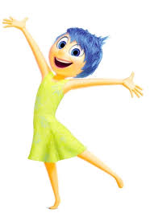
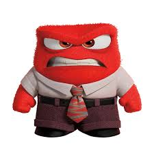
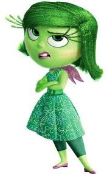
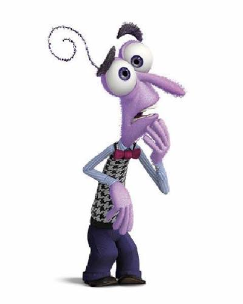
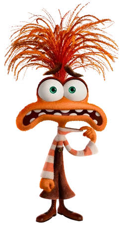
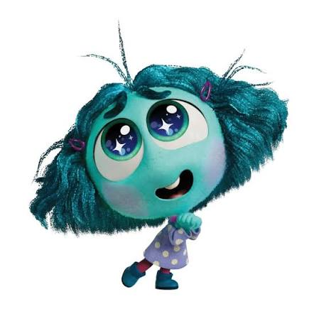

ALEGRIA
Representa el bienestar, la motivación y la satisfacción. Su función es impulsar la búsqueda de experiencias positivas, fortalecer los vínculos sociales y fomentar el optimismo.
TRISTEZA
Surge ante las pérdidas, decepciones o momentos difíciles. Su rol fundamental es permitir el desahogo emocional, procesar el dolor y comunicar la necesidad de ayuda o empatía.

ENOJO
Se activa frente a situaciones percibidas como injustas, amenazantes o frustrantes. Su función es movilizar energía para defender límites, luchar por la justicia o reaccionar ante agresiones.

DESAGRADO
Funciona como un filtro de protección. Evita la ingesta de sustancias nocivas o dañinas y rechaza situaciones, comportamientos o entornos que resulten desagradables o tóxicos.

TEMOR
Es el mecanismo de supervivencia por excelencia. Se activa ante el peligro inmediato para preparar al cuerpo para la huida o la defensa, protegiendo la integridad física.

ANSIEDAD
Se orienta hacia el futuro y lo incierto. Su objetivo es anticipar posibles problemas o amenazas lejanas para preparar estrategias de afrontamiento y prevención.

ENVIDIA
Nace de la comparación social. Permite identificar deseos o metas al observar lo que otros poseen, sirviendo como estímulo de superación o alerta de desigualdad.
VERGUENZA
Aparece cuando se percibe una falla respecto a las expectativas del entorno. Su función es promover la autoreflexión sobre las conductas sociales para no poner en riesgo la pertenencia al grupo.
ABURRIMIENTO
Refleja la falta de estímulo o interés. Funciona como un regulador que indica la necesidad de cambio, descanso o búsqueda de nuevas actividades con mayor significado.